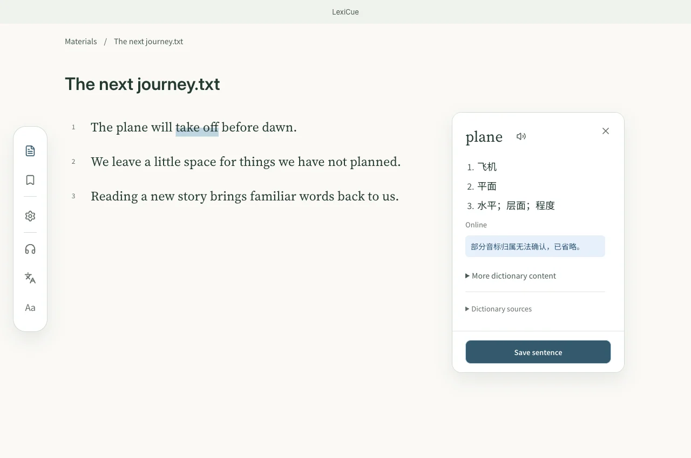
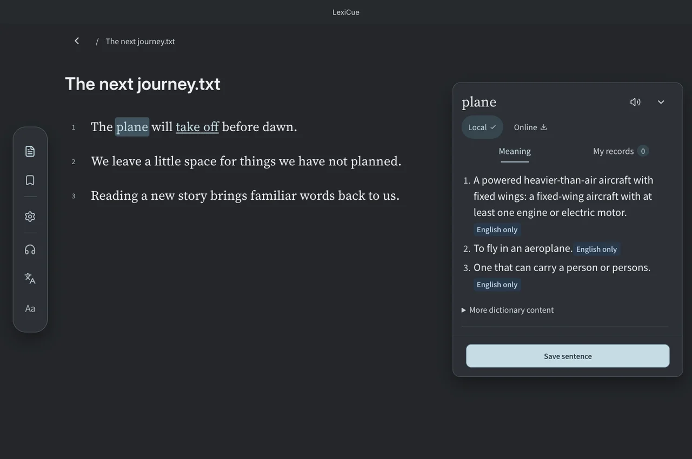

Reading and lookup
Understand English without losing your place.
On this page
Words and passages
- Select a word for dictionary lookup, or select a passage to understand it in context. Switch among available dictionary sources and write your own explanation when useful.
- The lookup panel opens beside the text on desktop and as a bottom sheet on a small screen. Close it to continue reading.



See alsoDictionary meanings
Chinese translation and listening
Use the translation control to show or hide Chinese text. Existing translations are preserved; missing translations can be fetched online. If fetching fails, you can continue reading English and retry later.
Enter listening mode to follow the reading. Play source audio when available or use speech; adjust playback speed. Speech and source playback depend on network, media availability and platform support.
Save your understanding
Save the expression, source sentence and available dictionary reference. Write your own explanation or note for this sentence. The current workspace uses saved contexts and re-encounters; older learning records remain in History.